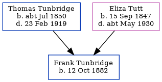

Frank Tunbridge 1882 -
[ Home ] | [ Calendar ] | [ Surnames Index ] | [ Errors ] | [ Family History ]A grocer's clerk and the 3rd of 5 children of Thomas Tunbridge (a dairyman) and Eliza Tutt (a general servant), Frank Tunbridge, the first cousin twice-removed on the father's side of Nigel Horne, was born in Hougham, Kent, England on 12 Oct 18821,2,3,4 and baptised there at Christ Church on 25 May 1898, the same day as his brothers Walter and Albert.
During his life, he was living at his birthplace on 5 Apr 18916; and at 5 Eaton Road, Dover, Kent, England on 31 Mar 19015.
Parents
- Thomas was born c. Jul 1850
- Eliza was born on 15 Sept 1847
Citations
- 1891 England Census Online publication - Provo, UT, USA: The Generations Network, Inc., 2005.Original data - Census Returns of England and Wales, 1891. Kew, Surrey, England: The National Archives of the UK (TNA): Public Record Office (PRO), 1891. Data imaged from The National
- 1901 England Census Online publication - Provo, UT, USA: The Generations Network, Inc., 2005.Original data - Census Returns of England and Wales, 1901. Kew, Surrey, England: The National Archives of the UK (TNA): Public Record Office (PRO), 1901. Data imaged from the National
- England & Wales births 1837-2006 - Findmypast
- England & Wales, FreeBMD Birth Index, 1837-1915 Online publication - Provo, UT, USA: The Generations Network, Inc., 2006.Original data - General Register Office. England and Wales Civil Registration Indexes. London, England: General Register Office. © Crown copyright. Published by permission of the Cont
- 1901 England, Wales & Scotland Census - Findmypast (was age 18 and the son of the head of the household)
- 1891 England, Wales & Scotland Census - Findmypast (was age 8 and the son of the head of the household)
Media
1891 UK Census

1901 UK Census

1891 England, Wales & Scotland Census - GBC/1891/0005982761
England & Wales births 1837-2006 - BMD/B/1882/4/AZ/000564/039
Kent, Canterbury Archdeaconry baptisms 1538-1912 - GBPRS/CANT/B/96323293
Family Tree
Map
Generated by ged2site. Last updated on Jul 3, 2024
Known Issues
May have been living with mother on 5 Apr 1891, but the addresses don't match or aren't detailed enough to be sure
May have been living with father on 5 Apr 1891, but the addresses don't match or aren't detailed enough to be sure